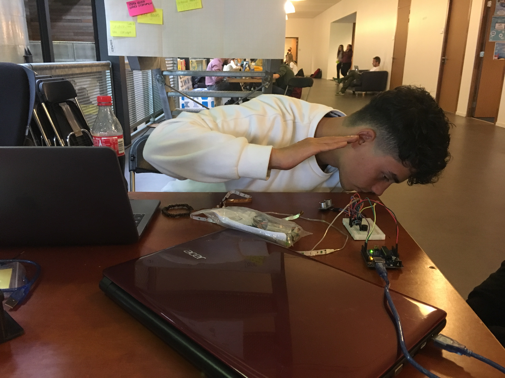
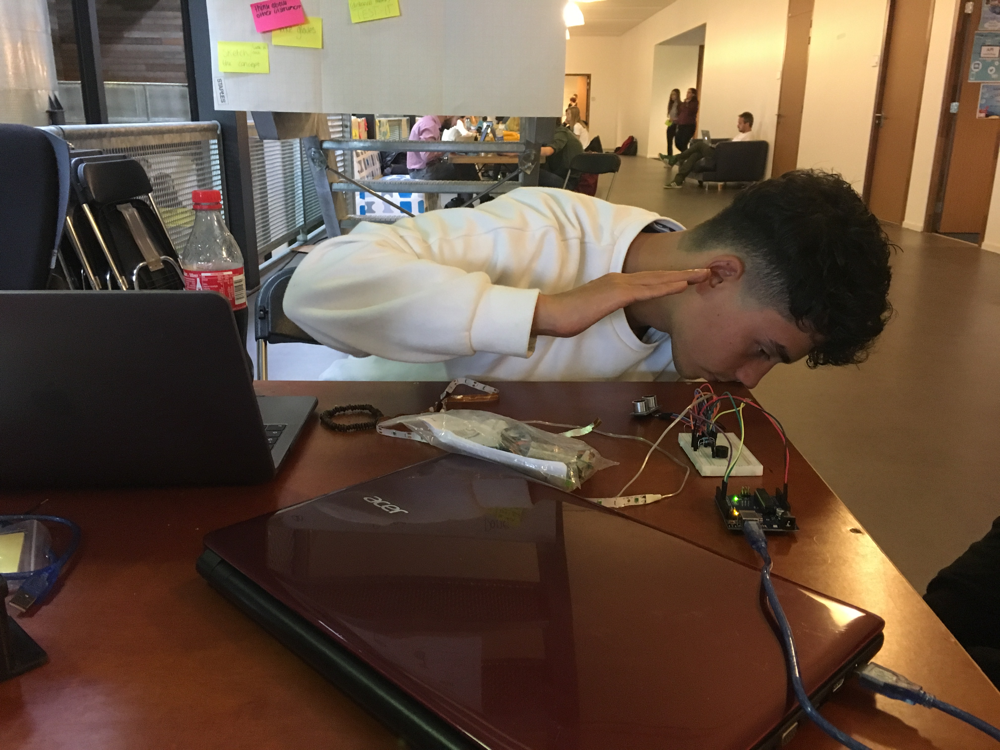
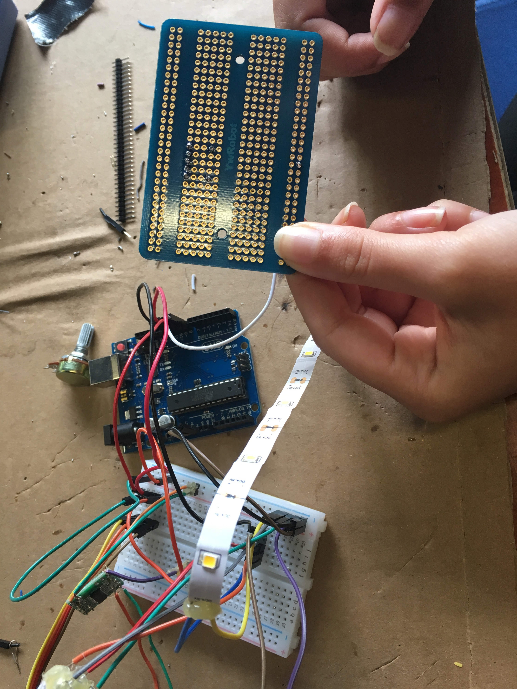
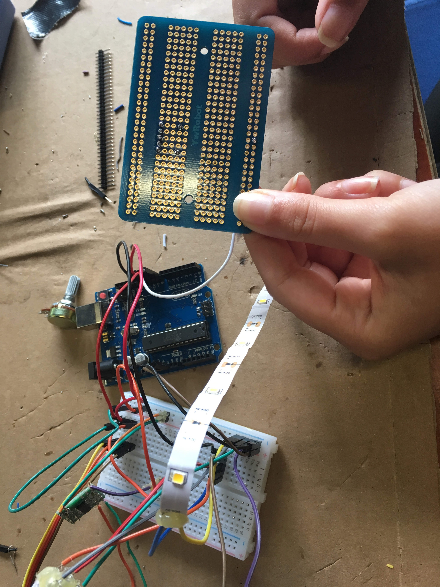
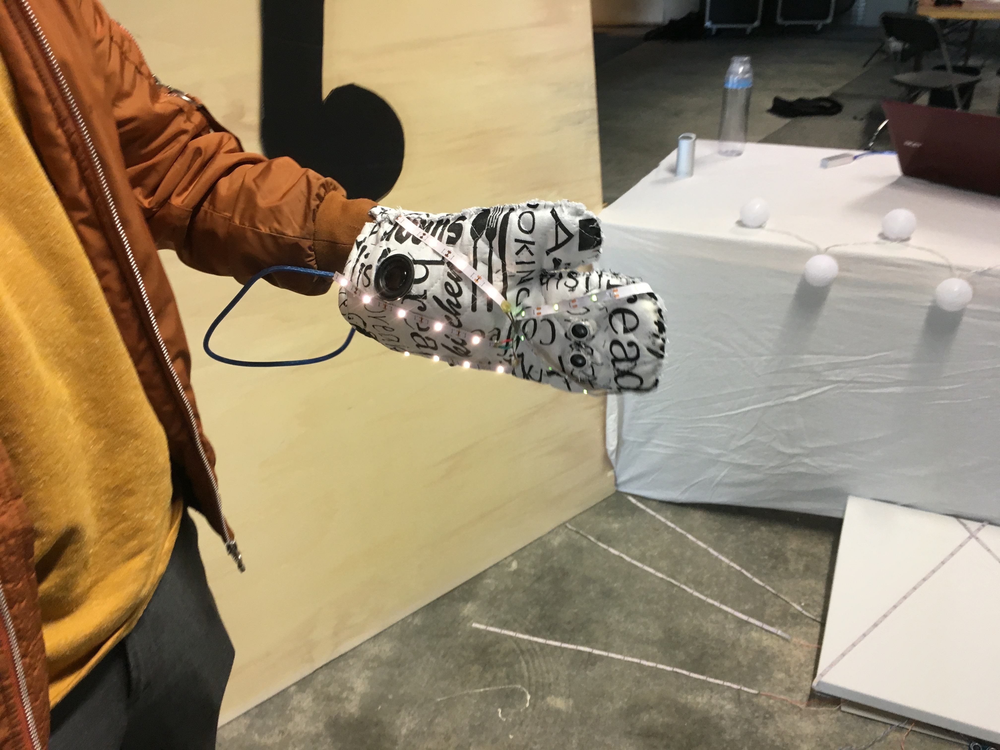
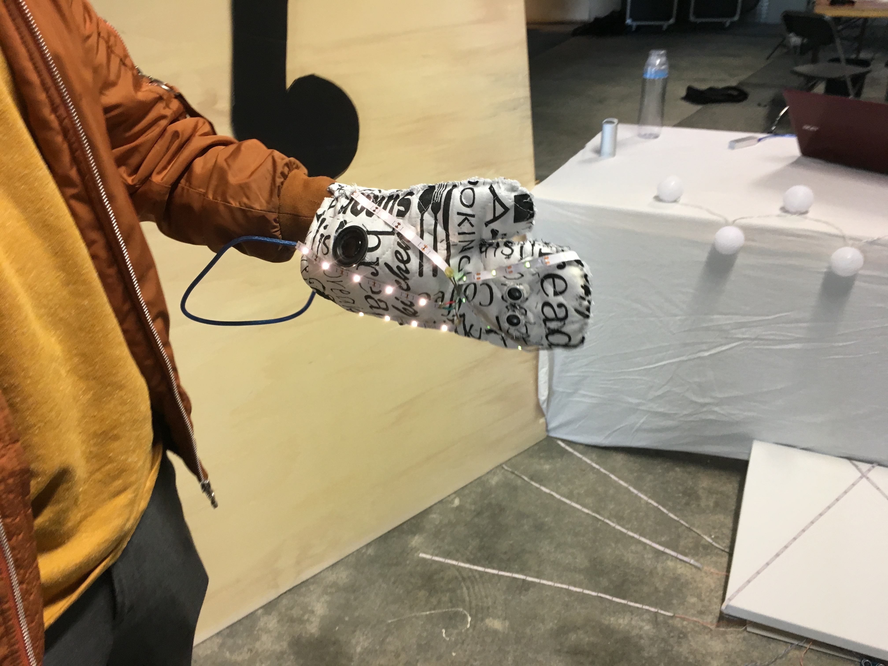

In de HCI lab weeks zit twee weken in Zoetermeer. Tijdens deze weken heb ik met een groep aan een project gewerkt met als onderwerp wearables. Hieronder is per dag het proces beschreven en een productbeschrijving en reflectie is ook toegevoegd. Benieuwd wat wij hebben gemaakt? Lees dan zeker even verder!
Vandaag zijn we gestart met de HCI labweken. Ik heb de topic 'wearables' toegewezen gekregen. Dit was echter ook mijn eerste keuze. Als eerste heb ik kennis gemaakt met mijn groepsleden. Ik zit in de groep met een Bulgaarse, Duitse en drie Nederlandse studenten. Dit was wel even omschakelen omdat ik Engels spreken niet al te makkelijk vindt. Naar mate de dag voorderde ging het al beter. Hieronder is onze groepsfoto te zien:

Toen het kennismaken erop zat, zijn we begonnen met een tactiek te bedenken om concepten te bedenken. Aangezien je in principe alles mocht maken wat realiseerbaar is, hadden we wat moeite met de opstart. We hebben als eerste hebben we een scrum bord gemaakt en vervolgens zijn we begonnen met brainstormen. Ik stelde voor om eerst een doelgroep te kiezen en vervolgens te kijken of deze doelgroep tegen problemen aanloopt. Vervolgens schoot het niet bepaald op met concepten bedenken en hebben we gebrainstormt over de vraag waarvoor iemand een wearable nodig heeft. Hier kwam uit dat het vooral het leven makkelijker moet maken. Vervolgens hebben we onderzoek gedaan naar de mogelijkheden en daarbij horende technologie om te kijken om minder breed te gaan denken en sneller een haalbaar concept kunnen verzinnen. De tactiek stond dus niet bepaald vast en wanneer er een idee bij iemand te boven schoot, zei hij of zij dat in de groep. Vervolgens dachten we dit idee verder uit en vulde aan waar nodig. We hebben uiteindelijk heel veel goede concepten verzonnen, alleen liepen we tegen het probleem aan dat het idee of al bestond of dat het voor ons niet haalbaar was om te realiseren omdat het te complex is. Hieronder zal ik een paar van onze concepten benoemen:
Het festival concept: mensen die naar festivals gaan irriteren zich vaak aan het feit dat ze eerst lang in de rij moeten staan om muntjes te kopen en vervolgens ook nog is lang in de rij moeten staan om drinken te halen. Daarnaast is de kans groot dat je je vrienden kwijt raakt op een festival. Deze problemen wilde wij oplossen door een wearable te maken, bijvoorbeeld een pet of polsband waar je zelf munten op kan zetten en ook mee kan betalen. Daarnaast heeft het een gps systeem in zich om je verloren vrienden te vinden op het festival. Wanneer je dichter bij je vriend in de buurt komt, des te sneller gaat de armand knipperen. Een andere uitwerking is dat er in de binnenkant van de pet(klep) de route door middel van lichtgevende pijltjes wordt aangegeven. Echter was dit idee met de gps niet realiseerbaar voor ons en het bestond deels al.
Energie opwekken concepten: ook wanneer men op een festival is of ergens anders dan thuis, is de kans groot dat de batterij van je telefoon leeg is. Daarom hebben wij een pet bedacht met daarin zonnenpaneeltjes die stoom opwekken. Daarnaast zit er in de pet een mini powerbank die je los kan koppelen van de pet en in je mobiel kan pluggen. Een ander concept omtrent energie was een schoen die door middel van beweging energie opwekt. Ook deze heeft een kleine powerbank in zich om vervolgens los te koppelen en in je mobiel te pluggen. Vervolgens dachten we dit ideen in een riem of buiktasje te stoppen om zo door middel van dansende bewegingen ook energie op te wekken. Uit deze concepten bleek dat we ons richtte op de doelgroep die naar festivals gaat.
Deze en nog veel meer ideeën zijn ter spraake gekomen tijdens onze brainstormsessie maar hebben geen definitief concept opgeleverd. Toen we aan het einde van de middag even pauze namen, kwam er een nieuw probleem op een festival te boven. Namelijk dat het moeilijk in is te schatten watvoor kleren je aantrekt en wat het weer zal gaan doen. Om deze reden hadden we een jack bedacht die verstelbaar is van temperatuur. Dit bestond echter al. Toen kwamen we plotseling op het idee om een jack te combineren met verkeer. De temperatuur functie is hierbij echter ook mogelijk, maar we zijn ons gaan richten op de veiligheid en met name van de fietsers. Het uiteindelijke concept luidt als volgt: de wearable jas is gecombineerd met Google maps. Een mobiel in het verkeer is namelijk onveilig, maar soms moet je toch de weg zien te vinden. Daarom hebben wij het idee om een jack te ontwerpen met vibratie en lichtjes in de mouwen. Daarnaast heeft hij lichtjes aan de voor en achterkant die aangaan als het donker is. Ook is er een klein displaytje te zien in de mouw. Google maps is verbonden via bluetooth met het jack. Wanneer je telefoon gewoon in je jaszak zit, maar wel de route vlak voordat je weg ging hebt ingesteld, kom je ook op de plek van bestemming. Het jack vibreert en licht op wanneer de persoon naar links of rechts moet. Daarnaast is op de display te zien over hoeveel meter. Aan het einde van de dag hebben we het scrumbord compleet gemaakt voor de volgende dag.


Vandaag zijn we gestart met een kort overleg over wat er vandaag gedaan gaat worden. We hebben de taken verdeelt over 3 groepen van 2 personen: een research groep, een concreat concept groep en een app building groep. Ik maakte deel uit van de research groep. Eva en ik zijn begonnen met informatie op te zoeken over Arduino in samenwerking met Google maps en over de elementen die we nodig hebben voor het prototype. Vervolgens hebben wij de concept groep geholpen met een scenario en een storyboard te maken en het idee van de mouwen hebben we verder uitgewerkt: de armen bevatten geen display's meer, maar ledlichtjes die aftellen en 2 vibraties, boven en onder op je onderarm. Vervolgens zijn we naar de action gegaan om spullen te kopen voor het prototype. We hebben hier een 5m lang draad gehaald van 12v waar je de lichtjes naar elke geweste kleur kan aanzetten en een powerbank om de arduino van stroom te voorzien in de jas. Toen we terug waren, kwamen we erachter dat de lichtjes moeilijk aan zijn te sluiten op de arduino omdat de lichtjes te veel volt bevatten. Na verschillende opties te hebben bekeken, hebben we ervoor gekozen om andere ledlichtjes te kopen van 5v. Voor de rest is er door 2 groepsgenoten een aardig begin gemaakt met de app. In het begin waren er wat problemen door de vernieuwde privacy wet. Morgen gaan we verder met het testen van de lichtjes.


Vandaag zijn we zoals elke dag begonnen met een overleg bij het scrum bord. De taken zijn opnieuw verdeelt. Julian en Noella maakte weer deel uit van het app builing team, Kiril en Anne zijn aan de slag gegaan met een ontwerp voor het prototype en een naam bedenken en Eva en ik zijn aan de slag gegaan met de nieuwe ledlampjes. We wilden starten met de ledlampjes zo de maken dat het verbonden kon worden aan de arduino. Echter vroegen we ons af of we dan de lampjes een voor een konden programmeren zoals de bedoeling was voor de mouwen. Helaas was dit niet het geval en kwamen we erachter dat het misschien een beter idee is om het concept van de aftellende lampjes eerst te vervangen voor knipperende lampjes: hoe dichter je bij de bocht komt, hoe sneller de lampjes gaan knipperen. Dit is namelijk ook bij auto's het geval, wanneer een auto dichter bij een object komt, hoe sneller de auto gaat piepen. Wanneer dit is gelukt kijken we verder of ons eerste idee ook kan werken. Vervolgens zijn we met de Arduino verder gegeaan om te kijken hoe we dit kunnen realiseren. Daarbij heb ik research gedaan. Julian heeft de API van Google maps onderzocht en geeft het geprogrammeerd in de website. Vervolgens zijn we naar de Action gegaan om nieuwe ledlichtjes te halen. We hebben 4 setjes witte ledlichtjes gehaald zodat we deze kunnen kleuren indien nodig. Ook hebben we vandaag de ledlampjes buiten getest om te kijken welke kleur het beste in het licht te zien is.


Vandaag hebben we aan het begin van de dag de rollen opnieuw verdeeld. De meiden zijn begonnen met de promises en de jongens met de app. Tim kwam ook even langs, maar we liepen tegen het probleem aan dat we zonder echte programmeeurs in onze groep, het heel erg moeilijk wordt. Daarnaast kregen we de feedback om de app beter uit te werken omdat we er niet goed genoeg overna hebben gedacht. Tim hielp ons mee denken in oplossingen: misschien eerst alleen een jach maken die zegt dat je naar rechts of links moet. We zaten op dat moment met het probleem of we het wilden proberen of een nieuw concept te bedenken. In de tijd dat Tim Julian hielp, zijn de meiden gaan kijken naar de ideeën die wij eerder deze week haddne bedacht. Even later kwamen we erachter dat ons huidige concept nieteens mogelijk is. Vervolgens zijn we ideeën gaan bedenken rondom het onderwerp 'telefoon gebruik in het verkeer'. Vervolgens kwam het idee om het oude concept deels te behouden, alleen dan op spraak te laten navigeren. Hier hebben we vervolgens research naar gedaan. Daarnaast hebben we nieuwe bedacht. Na een tijdje hadden we een nieuw concept bedacht: dit concept kan door 1 of 2 personen worden gebruikt. Het idee is dat je door middel van 2 handschoenen geluid kan maken door de afstand te veranderen of met de afstand te spelen. Er kan op deze ganier muziek worden gemaakt zonder muziekinstrumenten. We hebben als eerste research gedaan naar onderdelen die we nodig zullen hebben. Vervolgens hebben we het concept verder uitgewerkt door een paper prototype te maken. We willen iets met geluid en muziek doen op de handschoenen maar we weten nog niet wat haalbaar is, vandaar dat we starten met alleen geluid. In de middag hebben we een presentatie van Next Empire bijgewoond. Aan het einde van de dag hebben we spullen besteld die we nodig hebben voor ons nieuwe concept en een naam bedacht: 'aircordion'.

Vandaag zijn we na ons korte overleg aan de slag gegaan met het concept verder uit te werken. Het doel van deze dag was om een protoype met de arduino te maken en te testen. Eva, Anne en ik hebben de promise bedacht. Vervolgens heb ik research gedaan naar de manier om licht en geluid te combineren op basis afstand. Hierbij heb ik filmpjes bekeken en ideeën opgedaan om ons concept uit te breiden. Vervolgens gingen de jongens aan de slag met de arduino en gingen de meiden de led lampjes strips solderen aaneen pin voor in het arduino bord. Vervolgens gingen we de lampjes testen op de arduino en hebben we heb verder uitgewerkt. We hadden nog problemen met de sterkte van het geluid dus heb ik meerdere resitors toegevoegd op het bord zodat het geluid harder is. Vervolgens hebben de jongens ook met Chris een speaker gemaakt zodat het nog harder is. Hoe we dit daadwerkelijk willen doen moeten we volgende week uitzoeken. Ook was het idee om het geluid van een accordeon te gebruiken bij de verschillende frequenties, maar daar zijn we nog niet gekomen en ook dat gaan we volgende week uitzoeken. Daarnaast hebben we nagedacht over uitbreidingen van ons concept en daarbij kwam het idee om ons concept te koppelen aan medmapper zodat er bijvoorbeeld een dier of voorwerp bepaalde bewegingen maakt op een bepaalde frequentie. Daarnaast hebben we ook nagedacht over de plaats van de lampjes en over de context. Een donkere ruimte kan voor een show zorgen. Ook hebben we deze dag weer naar een gastspreker geluisterd.
 

In deze tweede week van HCI zijn we gestart met standup. We zijn toen met zijn alle begonnen om het concept verder uit te werken. We vinden een handschoen die op basis van afstand verschillende tonen en licht uitvoerd. We hebben een groot blad gepakt en hebben daar met post-its onze ideeën op geschreven. Deze ideeën hebben we gecategoriseerd en vervolgens hebben we ze in de groep besproken. We zijn van plan om eerst het idee van een band uit te werken en vervolgens kijken of we een avatar op de tonen van de muziek kunnen laten dansen of een disco te creeëren. Vervolgens heb ik onderzoek gedaan naar de mogelijkheid om Madmapper te combineren met arduino op basis van geluid. Dus hoe kan de output van de geluidmakende handschoenen om worden gezet in een dansende avatar bijvoorbeeld op de computer. Vervolgens hebben we andere ideeën bedacht om ons concept uit te werken. Een van de ideeën was om lichtjes aan het plafond te hangen die reageren op de muziek. Vervolgens hebben we research gedaan naar verschillende instumenten geluiden die we kunnen gebruiken. Nadat ik de geluiden van de instrumenten had gevonden ben ik met Julian gaan kijken hoe deze kunnen worden gekoppeld aan de Arduino. Dit is deze dag helaas nog niet gelukt, ,aar we hebben eerst het standaard geluid van de Arduino consistent gemaakt. Dit was namelijk niet het geval.
Vandaag zijn we na de standup verder gegaan met de andere lichtjes te solderen. Vervolgens hebben we de empefire gesoldeerd dat bijdraagt aan het geluid. Daarna heb ik een ledstrip in drie stukken geknipt en aan elk een wire jumper gesoldeerd. Dit heb ik gedaan omdat we verschillende stroken in onze handschoen willen hebben. Vervolgens moeten deze in het arduino bord worden geplugt. Er was een probleem dat de lichtjes niet heel fel van kleur waren. Ik dacht dat dat op te lossen moest zijn en heb daarom een resistor vervangen voor een jumper wire op het arduine bread bord. Dit zorgde voor fellere lichtjes. Vervolgens heb ik de korte stukjes lichtstrookjes ook in het bord geplucht en dit zorgdeervoor dat alle drie de lichtstrokjes aan gingen en ook fel. Toen we deze test gesoldeerde lichtjes hadden getest, heb ik de handschoen erbij gepakt en heb ik de lengte van de lichtjes gemeten en daze afgeknipt. Vervolgens heb ik deze ook gesoldeerd en in het arduino bord geplugd. Ook hebben we nagedacht over een ander kleding stuk waar we ons andere prototype in kunnen maken. Aan het einde van de dag kwamen onze bestelde speakers binnen.
Vandaag zijn we na de standup begonnen met het prototype na te maken op een ander arduino bord zodat we twee prototypes hebben. Er was echter een probleem: het bord wordt heet en hij deed het niet. Dit hoewel we het precies hetzelfde hebben geaakt als ons eerste prototype. Daarom hebben we het breadbord vervangen voor een andere. De blinking code deed het toen, maar de code die wilde uploaden deed dat niet. Vervolgens is Chris gekomen en heeft een paar overbodige draden uit het bord gehaald. Het tweede prototype deed het toen ook, maar nog niet op de juiste manier. Het klinkt alsof hij blijft hangen en als er gaan object in de buurt is gaat hij alsnog door met geluid maken. Tussendoor kwamen kinderen van de basisschool ook even ons goede prototype testen. Ze vonden hem erg 'cool' en wilde hem ook wel op school of thuis gebruiken. Vervolgens heb ik de onnodige draadjes uit het eerste prototype gehaald. Voordat we begonnen met solderen, hebben we aan de kids gevraagt wat hun een leuk kledingstuk zouden vinden voor het andere prototype. Dus met welk ander kledingstuk zou jij muziek willen maken? Veel vonden een schoen een goed idee en daar zijn we over gaan brainstormen. We willen door middel van klitteband de arduino aan de schoen bevestigen. Dit omdat iedereen met elke schoenmaat het instrument kan gebruiken. Vervolgens zijn Eva en ik het prototype gaan solderen zodat het kleiner werd. Helaas was het alsnog te groot om in een handschoen te doen. Vandaar dat we het opnieuw zijn gaan solderen zodat het compacter is en de draadjes minder snel stuk gaan. Vervolgens hebben we deze getset maar helaas werkte hij op dat moment niet. Morgen gaan we kijken hoe dat kan.
 

Vandaag kreeg ik na de standup de taak om verder te gaan met ons lichtshow bord. Ik heb de overige ledstrips afgemeten en in stukken geknipt zodat het precies op het bord past. Vervolgens heb ik deze aan lange dragen gesoldeerd en pinnetjes aan gesoldeerd zodat het in het ardiuno breadbord geplugt kan worden aan de achterkant. Ondertussen was Julian de code voor de lichtshow aan het maken en Noella en Eva de handschoen in elkaar aan het zetten. Ook hebben we het prototype werkend gemaakt. Toen ik weer boven kwam hebben Julian en ik de lichtjes in het bord geplaatst en de code verder aangepast. Er was echter een probleem. Twee ledstrips waren fel maar vanaf de derde niet meer. Daarom hebben we een extra stroomtoevoer gemaakt door 3 batterijen te gebruiken. Anna is ondertussen bezig geweest met het schoen prototype. Kiril en ik hebben vervolgens elementen aan het breadbord toegevoegt zodat alle lichten fel zijn en ze van elkaar kunnen worden gescheiden. nu hebben we 4 groepen lichtjes. Vervolgens hebben we de afstandmeter weer toegevoegd en deze in de code werkend gemaakt. Op deze manier kunnen de lichtjes op een verschillende manier knipperen op basis van afstand, maar er is geen geluid. Het heet daarom ook de lichtshow. Dit hebben we ook bedacht als extra toevoeging op ons concept. We hadden als idee om de lichtshow op de grond te maken omdat dat er leuker uitzag. Hiervoor dachten we aan een mat of iets dergelijks. We wilde dit met de groep gaan bespreken, maar de beide prototypes waarmee ze bezig waren, broken. Eentje hiervan is opgelost. Morgen hopen we alles klaar te hebben voor de expo.

Vandaag is de allerlaatste dag van de HCI weken. Na verschillende tegenslagen hebben we ons prima herpakt en een werkend prototype tentoon kunnen stellen op de expo. Aan het begin van deze laatste dag hebben we de handschoen in elkaar genaaid. Dit is goed gegaan en alles is heel gebleven. Ook hebben we gewerkt aan het schoenprototype, maar op een of andere manier bleef het geluid hangen hoewel we precies dezelfde code hadden gebruikt als voor de handschoen en ook hetzelfde gesoldeerd. We denken echter wel dat er een fout in de bedrading zat of dat iets fout of perongelijk aan elkaar is gesoldeerd. Vervolgens heb ik versiering voor de expo gemaakt: onze stand aangekleed met lampjes en muzieknootjes. Ook heb ik de extra lichtshow op de grond gemaakt. Voor de rest heb ik deze dag heftige potjes tafelvoetbal gespeeld en met z'n alle pizza gegeten. Toen de expo begon, viel het op dat er vooral kinderen op af kwamen. We kregen verschillende leuke reacties van kinderen dat ze het graag thuis wilden hebben, het cool en gaaf vonden. Bovendien vonden ze het zo leuk dat ze maar bleven spelen en de aircordion niet aan andere kinderen doorgaven. Hieruit blijkt maar weer dat kinderen onze hoofddoelgroep zuullen zijn. Een moeder van een kind vond het ook erg leuk en gaf als opmerking dat het echt voor iedereen toegankelijk en leuk is. Ook kwam de vriendin van Chris langs. Zij zei dat ze het ook wel mee naar huis wilde nemen om Chris eermee te plagen hihi. We hebben na de expo de handschoen aan een basisschool juf meegegeven die heb heel graag wilde hebben voor haar kinderen in de klas. Al met al was het een geslaagde laaste HCI- en daarmee ook schooldag van mijn tweede leerjaar.

 

Ik heb samen met mijn groep de 'Aircordion' gemaakt. De aircodion is een handschoen waarmee iedereen muziek kan maken. Zelfs mensen zonder kennis van noten of ervaring kunnen gebruik maken van de aircordion. Daarom is hij dus zeer toegankelijk. Ook kan er met de aircordion muziek worden gemaakt zonder een muziekinstrument te gebruiken. Verder is hij voorzien van ledlichtjes die een andere snippersnelheid aannemen bij een andere toon. De aircordion kan worden gebruikt door een of meerdere personen. Het is gebleken dat kinderen het interactieve product vooral heel leuk vinden om mee te spelen, met of zonder andere. Maar ook volwassenen ervaarden plezier tijdens de expo. Hij sluit aan op onze topic 'wearables' omdat de handschoen onze wearable is die men aan kan trekken.
De aircordion maakt gebruik van een afstandssensor. Door middel van verschillende soorten afstanden, komt er een andere toon uit de speaker en een andere snelheid van knipperende ledlichtjes op de handschoen. Ook verschillende soorten materialen hebben invloed op de toon. De persoon in kwestie die de handschoen aan heeft, kan alleen of samen interactief bezig zijn met de aircordion. Men kan net zoals een acordion dezelfde handbewegingen maken, maar het kan dus ook op iemands lichaam, op een muur, op de grond en noem maar op. Zoalng er een object binnen een bepaalde afstand staat, zal er een toon uit de speaker van de aircordion komen. Ik heb natuurlijk al heel veel foto's van de aircordion in het week proces hierboven laten zien, maar hier nog een paar foto's en de eindvideo van het hele proces.
Bron: Noella Kootstra - Youtube
Ik ben naar omstandigheden wel tevreden met ons product. We hadden in eerste instantie natuurlijk een ander concept wat mij super gaaf leek om te realiseren, maar dit was illigaal waardoor we dit niet konden verwezelijken helaas. Dit product hadden we uiteindelijk binnen een week gemaakt. De code was eigenlijk vrij snel gemaakt, maar we hadden veel problemen met het solderen en dingen die stuk gingen. Ook hadden we het idee om echte tonen van bepaalde muziekinstrumenten te gebruiken, maar dit was niet mogelijk. Hoewel ik het product het liefst uitgebreider had gezien, is het al met ondanks de tegenslagen toch goed gelukt en werkend op de expo!
De kwaliteit van de aircordion is nog niet heel goed. Ten eerste braken de draadjes in de arduino best vaak omdat het apparatuur in de handschoen moest passen. Het bleek ondanks het solderen van het breadbord toch een groot geheel te zijn. Voor het mooie zou het kleiner een steviger moeten zijn zodat het precies in de handschoen past. Nu hadden we zelf een bakje gemaakt van plastic wat nog enigzins stevig was. Voor de rest zou de handschoen eigenlijk een echte handschoen moeten zijn met vingers in plaats van een overwant. De ovenwant gleed namelijk af bij kinderen. Ook was deze keuze uit praktische overwegingen gemaakt in verband met de ruimte. De kans dat het voor de expo stuk zou gaan was ook aanwezig, omdat dit eerder is gebeurt. Mijn groepsleden hadden ook niet verwacht dat het zo groot zou uitvallen. Ik had dat wel maar kreeg als reactie dat dat niet zo zou zijn en het wel goed zou komen. Ik had als oplossing een lange handschoen tot de elleboog ingebracht, maar dit is niet getest.
Ik vind dat ik best veel heb bijgeleverd aan het proces. Ik vond het een fijne groep om mee te werken en iedereen deed zijn best op zijn of haar manier. Wanneer er beslissingen genomen moesten worden, deden we dit met de gehele groep. Ik vroeg vaak om feedback van andere en als ik klaar was met mijn taak vroeg ik of ik iemand anders kon helpen. Helaas had ik de laaste week voorholteontsteking waardoor ik af en toe zoveel hoofdpijn had dat ik even wilde uitrusten of niet goed reageerde op mijn groepsleden. Ik vind dat ik mij volledig heb ingespannen om een goed eindresultaat te kunnen behalen. Ook het overleggen met de groepsleden heb ik naar mijn idee erg goed aangepakt. Iemand anders uit mijn groep die ging nog wel eens zijn eigen gangetje en wilde zijn mening of idee verwezelijken terwijl andere daar niet achter stonden. Ik heb hier wel een paar keer wat van gezegd, maar dat mocht niet baten en toen heb ik het maar laten gaan om een nare sfeer te voorkomen. Ook had ik best wel moeite met de taalbarierre. Ik ben niet heel goed in Engels, laat staan spreken en dan word ik als het ware voor het blok gezet om het te moeten spreken. In het begin vond ik het wel een beetje eng maar naar mate de weken voorderde ging het steeds beter. Eigenlijk was dit een goede oefening voor mij hoewel ik er op het begin echt tegen op keek. Ook was de vermoeidheid na twee weken te merken in de groep. Iedereen werd wat kort af, maar dat is begrijpelijk omdat we dit niet bij CMD gewend zijn. Al met al vond ik het een geslaagde twee HCI labweken waarin ik veel heb geleerd en samen heb mogen werken met een fijne groep.
Ik heb mijn tijd aan diverse dingen besteed. Ik heb van alles wat in het proces aanwezig was deel aan genomen. Concepten bedenken, schetsen, evalueren, ideeën bedenken, research doen, coderen, arduino in elkaar zetten, solderen, prototype in elkaar zetten en expo decor maken. We hadden de taken in de groep zo verdeeld dat bijna iedereen alles een keer uit het hele proces heeft gedaan zodat het twee leerzame weken zouden worden. Dit is bij mij in iedergeval gelukt. Hoewel ik geen codeer talent ben op het arduino gebied, heb ik toch mijn steentje bijgedragen aan de technische kant van onze aircordion. Naast het harde werken hebben we regelmatig tafelvoetbal gespeeld om op nieuwe ideeën te komen en weer vol energie te werk te gaan.
Ik was deze afgelopen twee weken best wel gemotiveerd. Toen we tegenslagen hadden natuurlijk wat minder, maar we moesten door. Mijn verwachtingen van de HCI labweken zijn wel waargemaakt. Ik had verwacht dat het intensieve maar ook gezellige weken zouden worden. Dit bleek ook zo te zijn, al helemaal doordat ik ziek was in de tweede week. Ik vond het ook gezellig met mijn maar ook met andere groepen. Ook heb ik contacten gelegd met UX studenten door middel van samen te tafelvoetballen. Ik heb ook zeker zoals eerder gezegd veel geleerd deze week. niet alleen op educatief gebied maar ook zeker op sociaal gebied. Helaas hadden wij alleen maar designers in onze groep waardoor we niet super veel van elkaar konden eren, maar het meer op elkaar helpen aankwam om er te komen. Dit vond ik als enige wel jammer omdat we dan misschien nog meer uit onze aircordion konden halen.